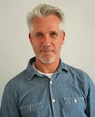
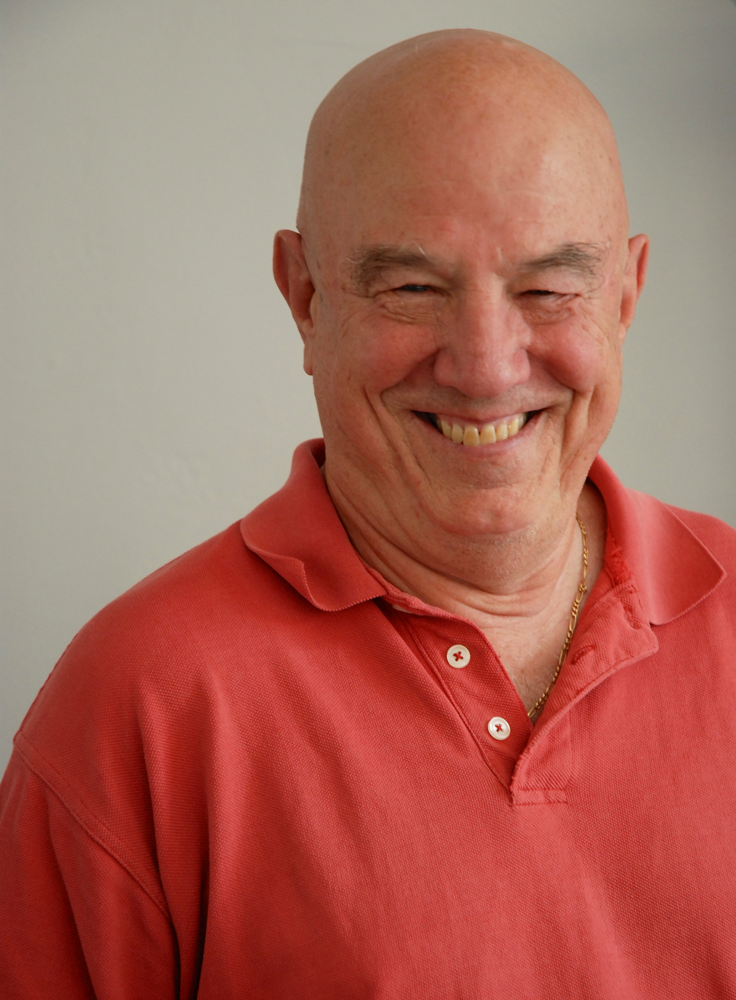

An Invitation to Deepen
This training is designed for practitioners who already have a strong foundation, but who feel called to deepen their understanding and embodied wisdom. The aim is not simply to become more advanced but to continue unfolding as a seasoned student of the work.
Curriculum
The Transpersonal Dimension of the Core Journey
To fully appreciate the rich offering, that is Core Energetics, we need to recognize that working with the body (exploring muscular blocks and releasing feelings), amazingly a rich endeavor though it is, has to be seen as only the absolutely necessary foundation in the journey to aligning with Unitive Consciousness.
To fulfill its promise, Core Energetics needs to invite the Breath to help us let go of any attachment to the Conditioned Mind which inevitably restricts it. Only then can we come to be fully present to, and welcoming of, all our experiences; and, in alignment with Unitive Consciousness, to be open to knowing who we truly are - embodied expressions of the Core.
In this offering, participants will be invited to explore the transpersonal aspects of Core Energetics - the journey of following Breath to the search of and surrendering to the meaning and purpose of our lives.
Transformation of Images
Fundamental to Core [and Pathwork] theory is the idea that each of us has a spiritual task to work on in our lifetime. This task involves developing a human life partly based on misconceptions and distortions from birth which brings us, via painful creations, to believe in false images about the nature of life.
The distortions, over time, become "built into" our bodies and energy systems, which make it difficult to free our energy to fully experience a free and satisfying life. Understanding this dynamic task both as a concept and from our own personal work helps when working with our clients' resistance to change, even when they notice these distorted images about their lives.
Sexuality
In Core Energetics, we view sexuality as much more than just physical intimacy. It’s the purest form of life energy – the force that fuels vitality in our body, drives human connection, and enables the continuation of life. This energy reaches its most powerful expression through our sexuality.
Human sexuality touches every layer of our being: body, mind, emotions, and spirit. When these levels work together in harmony, we feel a sense of wholeness, joy, and the vibrant aliveness we all long for. But for many of us, this connection is blocked. We've grown up with shame, guilt or fear surrounding sexuality – messages that labeled it as “dirty” or “inappropriate.” These internalized beliefs act as saboteurs, keeping us disconnected from our natural pleasure and from our ability to fully engage with others – and ourselves.
This masterclass is an invitation to:
- Explore your own relationship with sexuality
- Uncover and challenge limiting beliefs and images
- Reconnect with your sexual energy and let it flow freely
- Expand your ability to hold space for your clients’ sexuality – ethically, safely, and with vitality
Deconstructing Character Structures
This class is an in-depth examination of the primary Character Structures, their descriptions, manifestations in body types, and the underlying purpose of their understanding in the uncovering of consciousness. By observing the chief feature of each, we will discuss how these seemingly automatic responses are connected to underlying images, negative statements and negative pleasure and remain fixated through identification, pride, self-will, and fear. The aim of this class is to bring light to the transformation of the negative fixated aspects to core qualities of the structures which offer greater freedom of will and higher consciousness.
Program Details
The Faculty

Warren Moe
Former Executive Director of Core New York · Supervisor · Senior Faculty
Trained at the Institute of Core Energetics with John Pierrakos, he has been supervising students, held Senior Faculty positions at many international Core Energetic Institutes, and seeing clients for over 30 years.
Anna Timmermans
Founder & Former Director · Netherlands Institute of Core Energetics
Anna has been practicing Core Energetics since the 90s. She started the Netherlands Institute of Core Energetics and was director until 2025. She has also taught internationally in Mexico, New York, Montreal, and other parts of Europe.

Erena Bramos
Supervisor · Pathwork Helper · Gestalt Therapist · Senior Faculty
Erena has been practicing Core Energetics since the 80s. She is a supervisor and has trained practitioners internationally in Brazil, Greece, the Netherlands, and New York. She is also a Pathwork Helper and Gestalt therapist.

Jac Conaway
Supervisor · Senior Faculty · Pathwork Helper
Jac graduated as a Core therapist in June 1977 in New York at the Core Institute with John Pierrakos. He has been in practice seeing clients, supervising students, and teaching internationally since then. He also graduated as a Pathwork Helper in June 1978.
2027 Program Registration
Register by October 15, 2026
Four intensive modules · Litchfield, Connecticut · $4,500 USD (Plus Room & Board)
Interview required · Limited enrollment